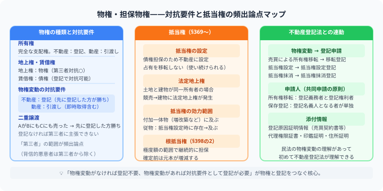

司法書士試験の民法・物権を完全攻略
法定地上権を設例で徹底解説
この記事でわかること（5秒まとめ）
- 不動産の物権変動は登記がなければ第三者に対抗できない（民法177条）
- 抵当権は占有を移転せず、質権は占有（引渡し）が成立要件
- 法定地上権は4つの要件をすべて満たしたときだけ成立する
- 根抵当権は個々の債権の発生・消滅に付従しないのが最大の特徴
大谷 一輝 より
こんにちは、大谷です！
物権の中でも法定地上権は「なぜこんな制度が必要なのか」が分かると一気に楽になる論点です。土地と建物が別々の所有者になってしまう競売の場面を具体的にイメージしながら、4つの要件を1つずつ当てはめていきましょう！
また、記事の末尾のほうにある【いいねボタン】をポチッと押してもらえると、めちゃくちゃ嬉しいです！
受験生
法定地上権、条文を読んでも「なぜこの制度が必要なのか」がピンときません……。
大谷（簿記1級勉強中）
具体例で考えましょう。Aが自分の土地の上に自分の建物を建てて、その土地だけに銀行Bのために抵当権を設定したとします。その後、競売で土地はCが、建物はAが取得したとしたら、どうなると思いますか？
受験生
えっと……Aの建物が、Cの土地の上に建ったままになってしまう、ということですか？それって建物を壊さないといけないんですか？
大谷（簿記1級勉強中）
まさにそこが問題になるんです。建物を壊すのは社会経済的に大きな損失なので、法律は「法定地上権」という権利を自動的に発生させて、Aが土地を使い続けられるようにしています。これが法定地上権の存在理由です。ただし、①抵当権設定時に建物が存在②その時点で土地建物が同一所有者③一方または両方に抵当権設定④競売で所有者が別々になった、という4要件をすべて満たす場合だけ成立します。
❓ 物権で押さえる論点
物権は「誰がその物を支配できるか」を決めるルールです。不動産は登記で対抗要件を具備します。抵当権の設定・法定地上権・根抵当権の仕組みを理解することが、不動産登記法の記述式対策の土台になります。

| 論点 | 見るポイント |
|---|---|
| 所有権 | 物を全面的に支配する権利 |
| 物権変動 | 売買・相続などで権利が移る場面 |
| 対抗要件 | 第三者に主張するために登記が必要か |
| 抵当権 | 債権を担保するために不動産につける権利 |
| 根抵当権 | 一定範囲の継続取引を担保する権利 |
📝 設例で見る：法定地上権の4要件
設例
Aが自己所有の土地上に建物を建て、その後銀行Bのために土地のみに抵当権を設定した。その後の競売でCが土地を、Aが建物をそれぞれ取得した。
法定地上権の4要件
①抵当権設定時に建物が存在：抵当権設定時、すでにAの建物は建っていた ✓
②抵当権設定時に土地建物が同一所有者：どちらもAの所有だった ✓
③土地・建物の一方または両方に抵当権設定：土地にBの抵当権が設定された ✓
④競売により土地建物の所有者が別々になった：競売でCが土地、Aが建物を取得した ✓
→4要件すべて満たすため、法定地上権が成立し、Aは土地を使い続けられる
①抵当権設定時に建物が存在：抵当権設定時、すでにAの建物は建っていた ✓
②抵当権設定時に土地建物が同一所有者：どちらもAの所有だった ✓
③土地・建物の一方または両方に抵当権設定：土地にBの抵当権が設定された ✓
④競売により土地建物の所有者が別々になった：競売でCが土地、Aが建物を取得した ✓
→4要件すべて満たすため、法定地上権が成立し、Aは土地を使い続けられる
🔍 物権変動は登記とセットで覚える
司法書士試験では、民法上の権利変動と不動産登記法上の登記手続きがつながります。売買で所有権が移ったら、なぜ所有権移転登記が必要なのか。抵当権を設定したら、なぜ抵当権設定登記をするのか。このつながりを意識しましょう。
対抗要件（民法177条）：不動産の物権変動を第三者に主張するには登記が必要です。売買契約が成立しても、登記をしなければ第三者に所有権を主張できません。
💰 抵当権は「債権回収のための権利」
抵当権は、債務者が弁済できない場合に、不動産から優先的に回収するための権利です。被担保債権、付従性、随伴性、物上代位などの言葉が出てきますが、まずは「お金を貸した側を守る仕組み」と考えると入りやすいです。
| 権利 | 占有の移転 | 債務者の使用 |
|---|---|---|
| 抵当権 | 移転しない | 引き続き使用できる |
| 質権 | 占有（引渡し）が成立要件 | 使用できない |
根抵当権は、不特定の債権を極度額の限度で担保する権利です。個々の債権の発生・消滅に付従しない（不随伴性）点が、通常の抵当権との最大の違いです。
学習のコツ：物権は図にしないと混乱します。AからBへ売買、BからCへ売買、誰が登記を持っているかを矢印で描きましょう。
📋 まとめ：民法物権 早見表
対抗要件不動産の物権変動は登記が必要（民法177条）
抵当権 vs 質権抵当権＝占有移転なし／質権＝占有が成立要件
法定地上権4要件すべて満たすと成立
根抵当権個々の債権に付従しない（不随伴性）